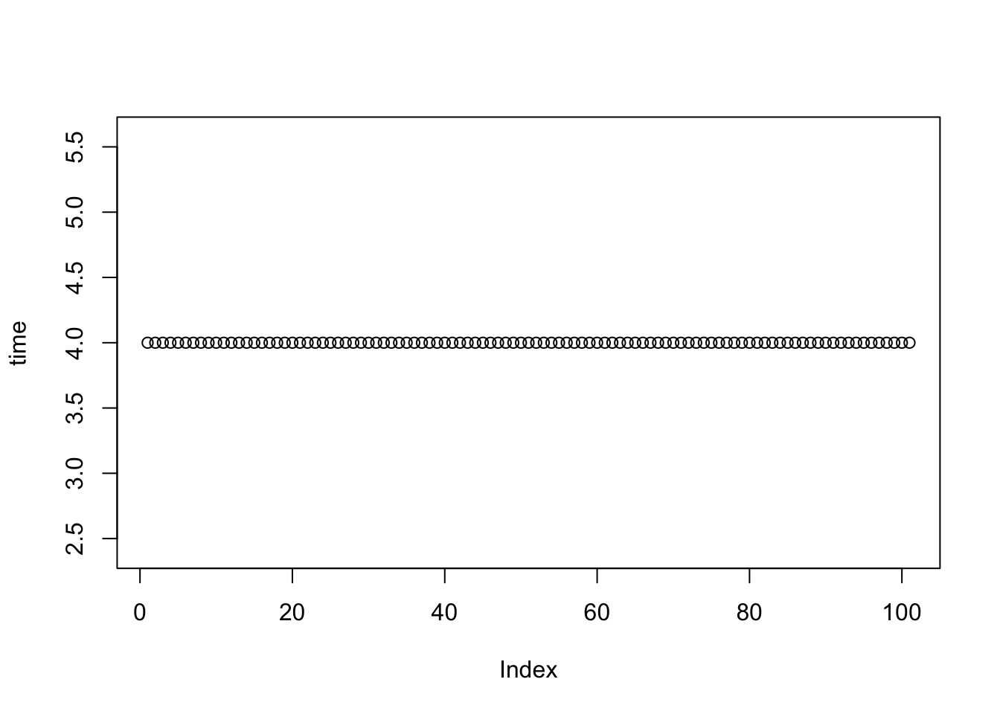
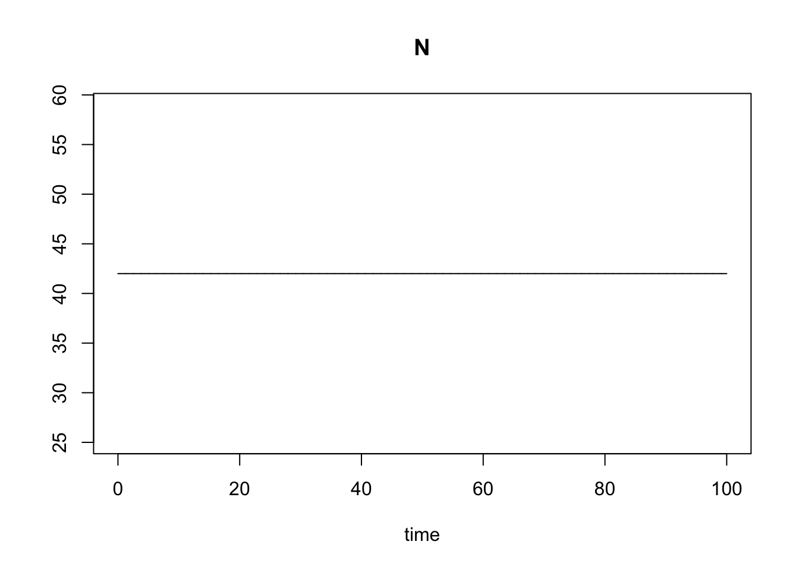
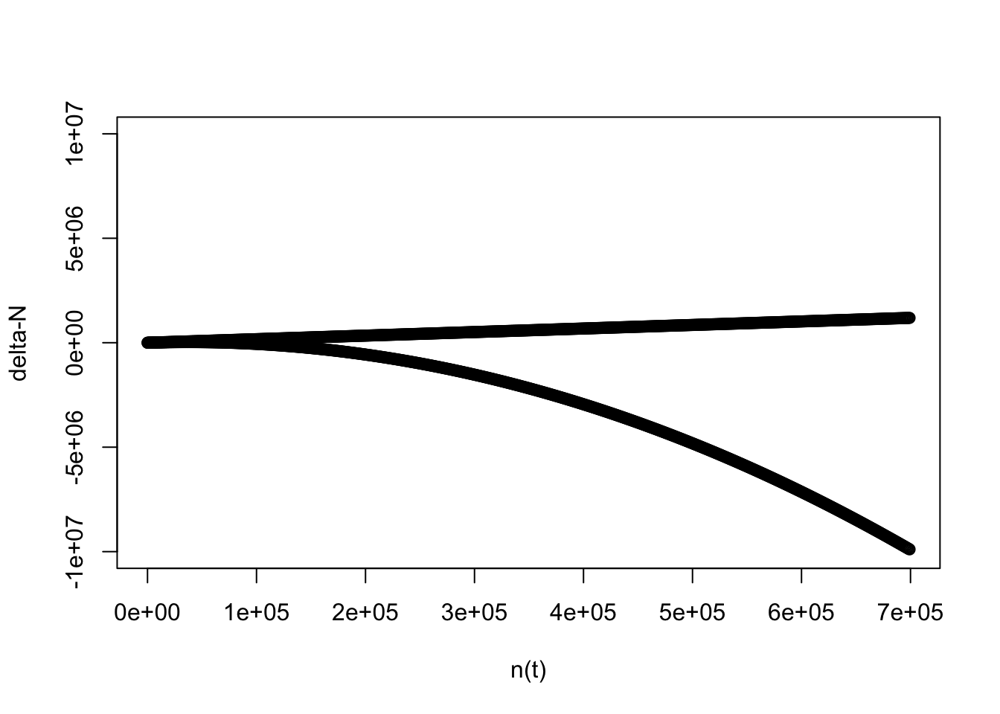

Using the life cycle diagram (Figure 2.2b), we begin from:
\[\begin{eqnarray} n'(t) = n(t) - dn(t) \\ n''(t) = n'(t) + bn'(t) \\ n'''(t) = n''(t) + m \end{eqnarray}\] 1. Substitute \(n'(t)\) equation into \(n''(t)\) equation:
\[ n''(t) = n(t) - dn(t) + b(n(t) - dn(t)) \]
Using the logic of \(1(x) + 2(x) = (1+2)x\), we re-arrange the right side to:
\[ 1(n(t) - dn(t)) + b(n(t)-dn(t)) = (1+b)(n(t) - dn(t)) \] The \(n(t)-dn(t)\) part can be re-written as \((1-d)n(t)\), leaving:
\[(1+b)(1+d)n(t)\]
\[ n'''(t) = n(t+1) = (1+b)(1-d)n(t)-m \] ## Some questions to answer before class
1. Explain the following statement- R, the number of surviving individuals per parent, is constant regardless of population size, and invariable for all individuals in the population. Contrast this with age-structured models (like we discussed last week).
We recall from Jackson et al. 2000 that in an age-structured model, not all individuals participate equally in the processes. In that example, they didn’t all have identical birth, predation, mortality rates.
2. Explain the difference between R in the recursion equation for exponential growth and r in the differential equation. What does per capita mean? What value of R indicates the population size is not changing and what value of r indicates the population size is not changing?
R in the recursion equation (discrete-time) is – the number of individuals that each parent / N is replaced by in the next time unit. A population would be considered to be constant (not changing) if each parent / N replaces itself… and thus R = 1.
We can see this in R: see R code, Exercise 7
## Exercise 7. Simulation model of discrete-time exponential growth
R <- 1
N0 <- 4
disc_exp <- function(R,N0){
Nt1 <- R*N0
return(Nt1)
}
N <- N0
for(i in 1:100){
Nt1 <- disc_exp(R,N0)
N <- c(N,Nt1)
N0 <- Nt1
}
plot(N,ylab="time")
In the differential / continuous time model (if births and deaths can occur at any time point, rather than in specific seasons), the population growth rate term is instead r, which is r=b-d, or the per capita rate of change in the number of individuals. This tells us the rate at which the population changes per individual in the population - the r value can be multiplied by each individual in the population to determine their total contribution to population growth. For example, if r = 0, then births are equal to deaths, and so the population is not changing. We refer to r as the per capita change in the number of individuals because the value is associated with each individual in the population.
We can see this in R: R code, Exercise 8
## Exercise 8. Continuous time model of exponential growth
library(deSolve)
cont_exp <- function(t, state, parameters) {
with(as.list(c(state, parameters)), {
dN <- r * N
return(list(dN))
})
}
parameters <- c(r = 0)
state <- c(N = 42)
times <- seq(0, 100, by = 0.01)
out <- deSolve::ode(y = state, times = times, func = cont_exp, parms = parameters)
plot(out)
3. How did the authors come up with the equation above Figure 3.3 directly from that figure? (Recall the formula for a line) \(y=mx+b\)
The logistic growth model arises when we consider that the population growth rate r is not fixed, but instead is density-dependent. It decreases as the population size approaches carrying capacity K. So we see a graph where r is a linear function of N. Since the relationship between r and N is linear, we can use the formula of a line to determine this function. Recall \(y = mx + b\), where m is the slope and b is the y-intercept.
We see from the plot two values of R: R = 1 when N = K (why? because population size doesn’t change anymore when \(N = K\)), and \(R = 1+r_d\) when N = 0 (because the population is at its maximal growth rate when there is no intra-specific competition). This gives us the y-intercept. To get the slope, we look at the change in y over the change in x. We take 2 points, \((x_1,y_1)\) and \((x_2,y_2)\), which can be \((0,1+r_d)\) and \((K,1)\). To get the slope, its \(\frac {y_2-y_1} {x_2-x_1}\), and that is: \(\frac {1 – (1 + rd)} {K – 0} = \frac {-r_d} {K}\). We put that together to get: \(R(n) = (1 + r_d) + \frac {-r_d}{K}n(t)\).
By the way, if you want to go on to derive the discrete-time logistic growth equation:
Begin from the logistic growth equation:
\[ n(t+1) = Rn(t) \]
And substitute the new value of R we derived above:
\[ n(t+1) = [(1+r_d) + \frac{-r_d}{K}n(t)]n(t) = n(t) + r_dn(t) + r_dn(t)(\frac{-n(t)}{K}) = n(t) + r_dn(t)(1-\frac{n(t)}{K})\]
**4. Be prepared to repeat what’s written in the Box under equation 3.5b when I ask “what does the *logistic growth model assume about how population growth rate changes with increasing population size?“**
The logistic model assumes that the rate of change of a variable decreases linearly as the variable increases in value, with no change occurring if the variable is at the carrying capacity K.
5. Explain the difference between a linear and non-linear model of population growth (exponential and logistic), basically using what is written in the box under Figure 3.4, and using equations 3.5b and 3.2 to illustrate this difference.
In a linear model, the change per unit time is a linear function of the variables; models that involve more complicated functions of the variables are called non-linear models.
We used \((R-1) = r_d\), so this is the per capita change in the number of individuals from one generation to the next. Equation 3.2 shows us that changes in n are a linear function of \(r_d\) and \(n(t)\). In equation 3.5b, change in n depends on \(n(t)\) in a non-linear way.
Begin from: \(R = 1 + r_d\)
equation 3.2) \(\Delta n = (R-1)n(t)\) –> linear
equation 3.5b) \(\Delta n = r_dn(t)(1 - \frac{n(t)}{K})\) –> non-linear
Where \(\Delta n\) –> a difference equation, \(\Delta n = n(t+1) - n(t)\)
We can see this in R: R code, Exercise 9
## Exercise 9. Linear and non-linear models
models <- function(rd,nt,K){
dN.1 <- rd * nt
dN.2 <- rd * nt * (1 - nt/K)
return(list(dN.1,dN.2))
}
rd <- 1.7
nt <- seq(100,700000,by=1000)
K <- 75000
res <- models(rd,nt,K)
plot(nt,res[[1]],ylim=c(-10000000,10000000),xlab="n(t)",ylab="delta-N")
points(nt,res[[2]])